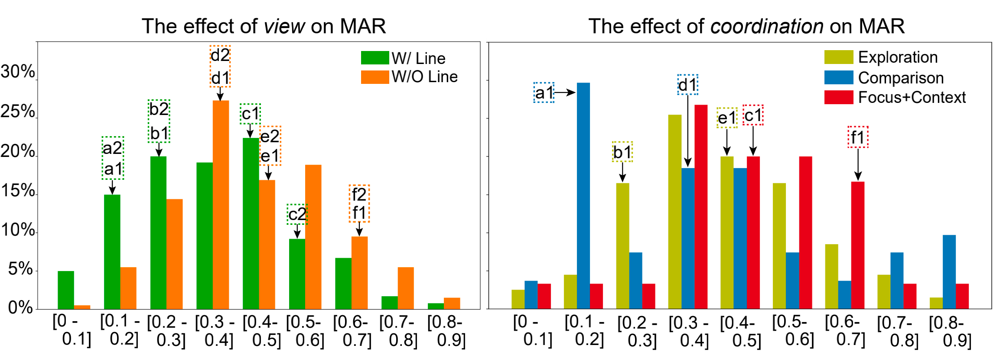
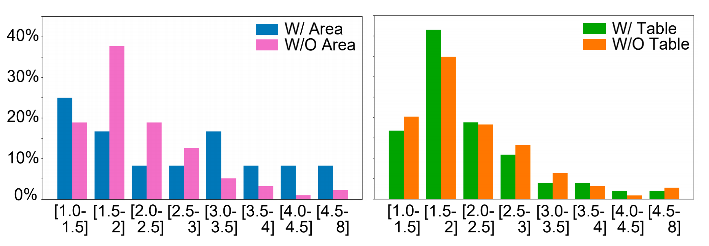
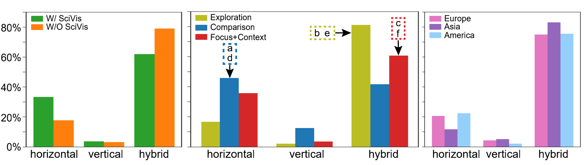

<!DOCTYPE html>
<head>
    <meta charset="utf-8">
    <meta name="viewport" content="initial-scale=1.0, user-scalable=no"/><!--屏幕自适应-->
    <link rel="stylesheet" type="text/css" href="index.css">
    <link rel="stylesheet" type="text/css" href="https://fonts.googleapis.com/css?family=Lato"/>
    <script src="https://code.jquery.com/jquery-3.2.1.min.js"
            integrity="sha256-hwg4gsxgFZhOsEEamdOYGBf13FyQuiTwlAQgxVSNgt4=" crossorigin="anonymous"></script>
    <link rel="stylesheet" href="jquery-ui-1.12.1/jquery-ui.css">
    <script src="https://ajax.googleapis.com/ajax/libs/jquery/3.2.1/jquery.min.js"></script>
    <link rel="stylesheet" href="https://maxcdn.bootstrapcdn.com/bootstrap/3.3.7/css/bootstrap.min.css">
    <!--  <script src="https://maxcdn.bootstrapcdn.com/bootstrap/3.3.7/js/bootstrap.min.js"></script>-->
    <!--  <script src="https://use.fontawesome.com/986cdf5935.js"></script>-->
    <link href="https://fonts.googleapis.com/css?family=Bree+Serif" rel="stylesheet">
    <header>
        <title>Modeling Layout Design for Multiple-View Visualization via Bayesian Inference</title>

        <style type="text/css">
            body {
                font-family: Arial, Verdana, Helvetica, sans-serif
            }

            p {
                float: left;
                display: block;
                font-size: 16px;
                text-align: justify;
            }

            .container {
                width: 960px;
                margin: 0 auto;
                text-align: left;
                padding: 1em 2em 2em 2em;
            }

        </style>
    </header>
</head>
<body>

<div class="container">
    <div class="row row-1">
        <div class="text-center">
            <span class="title-mv">Modeling Layout Design for Multiple-View Visualization<br>via Bayesian Inference</br> </span>
            <span class="journal-mv"><br>Journal of Visualization (ChinaVis 2021 Best Paper Honorable Mention)</br><br> </span>
            <span class="authors-mv">
      <a href="https://lingdan33.github.io/#">Lingdan Shao</a><sup>1</sup>,
      Zhe Chu<sup>1</sup>,
      <a href="https://xichen9608.github.io/#">Xi Chen</a><sup>1</sup>,
      <a href="https://yannahhh.github.io/">Yanna Lin<sup>2</sup>,
       <a href="https://zeng-wei.com/"> Wei Zeng</a><sup>1</sup>
      <br><br>
        <span style="font-size: 17px"><sup>1</sup>Shenzhen Institute of Advanced Technology, Chinese Academy of Sciences</span><br>
        <span style="font-size: 17px"><sup>2</sup>The Hong Kong University of Science and Technology</span>
    </span>
            </br></br>
            <div id="learn-more">
                <p class="sub-title-mv">Abstract：</p>
                <p class="content">
                    Layout design for multiple-view visualization (MV) concerns primarily how to arrange views in
                    layouts that are geometrically
                    and topologically plausible. Guidelines for MV layout design suggest considerations on various
                    design factors, including view (e.g., bar
                    and line charts), viewport (e.g., mobile vs. desktop), and coordination (e.g., exploration vs.
                    comparison), along with expertise and
                    preference of the designer. Recent studies have revealed the diverse space of MV layout design via
                    statistical analysis on empirical
                    MVs, yet neglect the effects of those design factors. To address the gap, this work proposes to
                    model the effects of design factors on
                    MV layouts via Bayesian probabilistic inference. Specifically, we access three important properties
                    of MV layout, i.e., maximum area
                    ratio and weighted average aspect ratio as geometric metrics, and layout topology as a topological
                    metric. We update the posterior
                    probability of layout metrics given design factors by penetrating MVs from recent visualization
                    publications. The analyses reveal many
                    insightful MV layout design patterns, such as views in coordination type of comparison exhibit more
                    balanced area ratio, whilst those for
                    exploration are more scattered. This work makes a prominent starting point for a thorough
                    understanding of MV layout design patterns.
                    On the basis, we discuss how practitioners can use Bayesian inference approach for future research
                    on finer-annotated visualization
                    datasets and more comprehensive design factors and properties.
                </p>
            </div>

            <p class="learn-more">
                [<a href="material/Modeling Layout Design for Multiple-View Visualization.pdf">Paper</a>]
                <!--      [<a href="material/#">Supplementary</a>]-->
                [<a href="material/mv_data.zip">Dataset</a>]
            </p>
        </div>
    </div>

    <div class="row row-2">
        <div class="learn-more">
            <p class="sub-title-mv">Results</p>
            <p align="center"></p>
            <p class="content">Figure 1：The posterior probabilities of MAR distribution upon the condition of view (left) and coordination (right), derived from Bayesian
                inferences using the observed MVs.</p>
            <p align="center" ></p>
            <p class="content">Figure 2： Posterior probability distributions of WAAR when MVs are categorized by having area chart on the left, and having table on the right.</p>
            <p align="center"></p>
            <p class="content">Figure 3：The posterior probability distributions of layout topology upon the condition of view (right-1), coordination (right-2), and
                designer (right-3), derived from Bayesian inferences using the observed MVs.</p>
        </div>
    </div>

    <div class="row row-3">
        <p class="sub-title-mv">Acknowledgement</p>
        <p class="content">The authors wish to thank the reviewers for their valuable comments.
          This work is supported by Guangdong Basic and Applied Basic Research Foundation (2021A1515011700).</p>

    </div>
</div>

</body>

</script>
